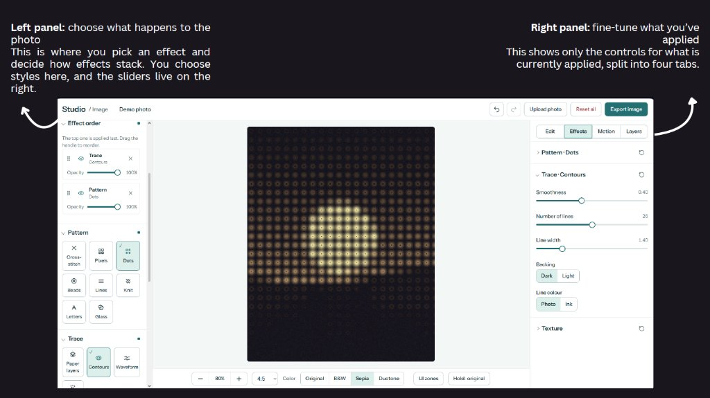
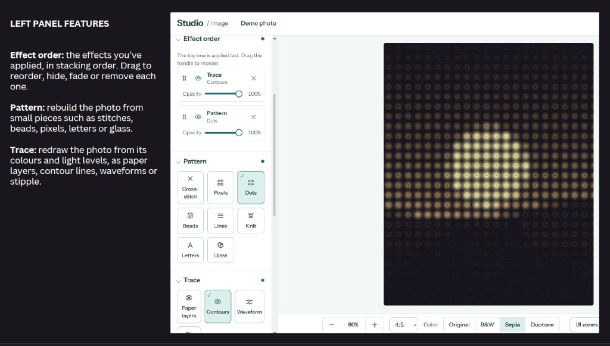
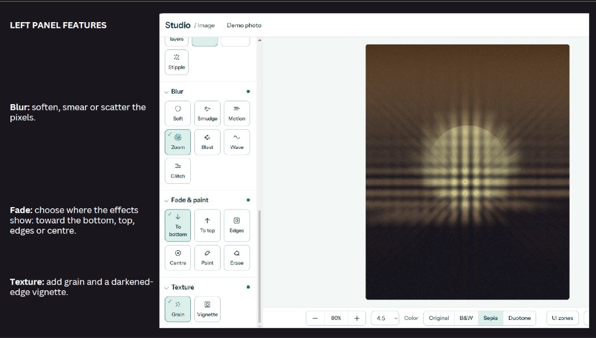
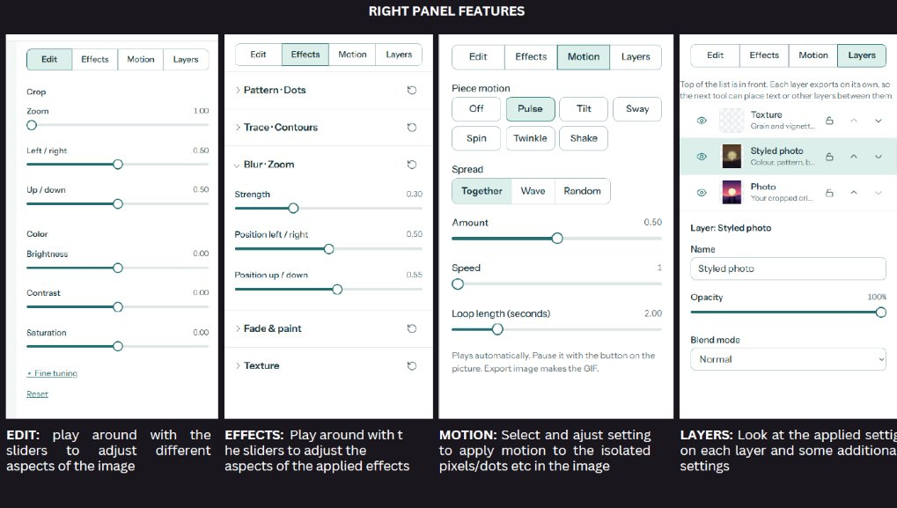
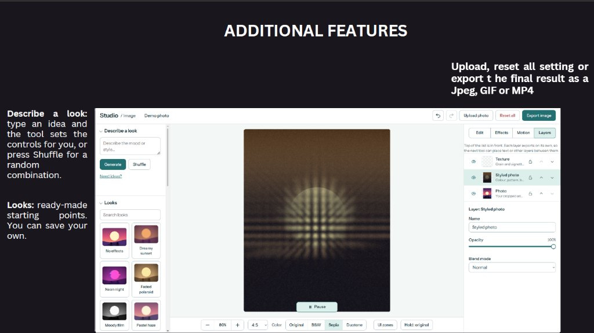

ISL Studio
A working Indian Sign Language practice platform combining webcam gesture recognition and interactive feedback for beginner ISL learners.

The Image Tool was developed as part of a larger ecosystem of six tools for social media content creation. I independently designed and developed this tool over two weeks, exploring how users could experiment with images through different effects, patterns and visual treatments. The aim was to create an interactive space for creative exploration without making the process feel complicated.
Creating distinctive visual content often involves switching between multiple tools or relying on pre-made templates. The Image Tool explores a more flexible way of making images, giving users the freedom to experiment with effects and create their own visual compositions.
A closer look at the interface, its layout and the features that bring the image-making experience together.
The workspace is divided into two main panels. The left panel is where users choose effects and build their image, while the right panel provides controls to fine-tune the applied effects and adjustments.

The left panel brings together the different ways users can transform an image. From patterns and traces to blur, fading and textures, each feature offers a different way to experiment with the original photograph.


The right panel brings together the controls that allow users to fine-tune their image treatments. From adjusting visual parameters to experimenting with patterns, textures and effects, each feature provides a way to refine the final output while maintaining creative control.

Beyond the core image-editing controls, the tool includes additional features that expand how users can experiment with, customise and export their creations. These additions make the workspace more flexible and support a wider range of creative outcomes.

Building the Image Tool was an exploration of how simple variables can open up new ways of creating and interacting with images. It pushed me to think beyond conventional image editing, bringing together design and code to create a space where experimentation, play and unexpected outcomes become part of the creative process.
A working Indian Sign Language practice platform combining webcam gesture recognition and interactive feedback for beginner ISL learners.

A Financial Literacy App designed to help young adults to know about finance literacy through games, fun articles, blogs, and reels.

A board game for 2–5 players that encourages people to get to know one another through questions, strategy and play.

This Vertical Farm Mobile Van business is designed to bridge the gap between locally grown, fresh produce and urban consumers, creating direct access between vertical farms and the community.

A podcast and companion platform proposing small, intentional changes as an alternative to the pressure of instant self-improvement.